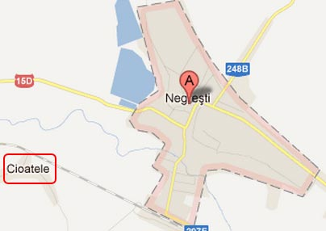

Un redactor obosit ori ameţit inventează o denumire de localitate, potrivind literele precum surdul, ca să sune bine. Apoi publică ştirea. Ce fac restul colegilor de breaslă? Preiau întocmai textul iniţial, distribuind tâmpenia în sute de mii de exemplare, fără ca nimeni să aibă reflexul unei banale verificări.
Ştirea e asta, iar copilul de doi ani intrat în comă alcoolică şi şoc hipotermic se afla în localitatea Cioatele, arondată oraşului Negreşti, din judeţul Vaslui, după cum ne spune şi harta:

CEATELE, probabil o combinaţie între Cetatea lui Mircea Dinescu şi ceata de pitici guralivi din capul jurnaliştilor, nu există. E scorneala presei româneşti, provenită din scăparea unui ziarist, pe care nimeni n-a sesizat-o. Totuşi, Google a indexat peste 200.000 de pagini în care ştirea cuprinde numele aşezării fictive. Iată dovada.
 Hotnews, Antena1 şi 3, România TV, Realitatea.net, Libertatea, România Liberă, Evz, Gândul etc. scriu despre “copilul din Ceatele“. Practic, toată “floarea cea vestită” a site-urilor de ştiri a înghiţit textul precum bufniţele îngurgitează şoarecii: pe nemestecate. Singura sclipire de profesionalism vine de la Adevărul, unde corespondentul local Ionuţ Balaban, corectează materialul.
Hotnews, Antena1 şi 3, România TV, Realitatea.net, Libertatea, România Liberă, Evz, Gândul etc. scriu despre “copilul din Ceatele“. Practic, toată “floarea cea vestită” a site-urilor de ştiri a înghiţit textul precum bufniţele îngurgitează şoarecii: pe nemestecate. Singura sclipire de profesionalism vine de la Adevărul, unde corespondentul local Ionuţ Balaban, corectează materialul.
Auto-proclamaţii specialişti în ştiri de la Antena3 au creat şi o etichetă cu numele fictiv. Ca şi ziariştii online de la România Liberă, de altfel. În paranteză fie spus, Alexandra Jeles continuă să scrie la RL.
Citeşte cineva ştirea înainte de a o publica?
Evident, nu poţi cunoaşte toate numele aşezărilor din România. Însă niciunui redactor nu i-a sunat straniu denumirea Ceatele, niciun editor n-a vrut să afle date suplimentare despre locul în care s-a produs incidentul? Interesul pentru documentare e nul, deşi motoarele de căutare şi enciclopediile online sunt gratuite.
Primele gânduri care îţi vin în minte atunci când citeşti “o mamă îşi îmbată copilul în vârstă de doi ani” sunt legate de contextul în care s-a petrecut evenimentul. Cum arată comunitatea respectivă, în ce mediu trăiesc oamenii despre care scrii? E momentul în care -inevitabil- realizezi că localitatea Ceatele nu-i de găsit. Fiindcă nu există.
Programele anti-virus pot limita răspândirea ameninţărilor informatice. Cum blocăm însă multiplicarea erorilor în presa online dacă aproape nimeni nu filtrează conţinutul? Dacă presă de calitate nu poate exista în absenţa unei finanţări consistente, am putea spera măcar la un copy-paste quality?


{kind=link}
Comments on this entry are closed.